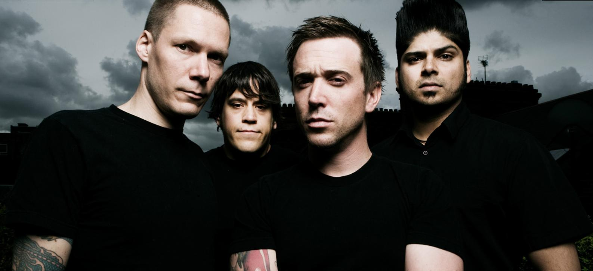
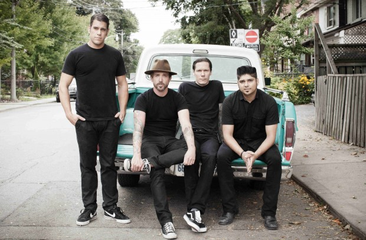

Коротка інформація
| Жанр | Альтернативний рок Панк-рок Репкор (під назвою "Pezz") Пост-хардкор (з 2003 року) |
| Роки | 1993 - дотепер |
| Країна | Канада |
| Звідки | Міссісога, Онтаріо |
| Лейбл | Atlantic Records, Warner Music Canada, Roadrunner Records |
| Склад | Бенжамін Ковалевич, Єн Ді'сей, Джонатан Геллант, Арон Соловонюк |
Історія
Місцем народження гурту можна вважати Медоувейл (Медоувейл) і Стрітсвілль (Стрітсвілл) - розташовані поруч райони міста Міссісога (провінція Онтаріо).
 У 1993 році Бенджамін Ковалевич і Джонатан Геллант входили до складу групи «To Each His Власні», де Геллант грав на бас-гітарі, а Ковалевич на ударних. Потім Ковалевич перейшов на вокал, а його місце зайняв Арон Соловонюк. Пізніше до них приєднався гітарист Іан Ді'Сей. Так з'явився гурт «Pezz».
У 1998 році він випустив перший альбом під назвою «Watoosh!» (Записаний в студії «Great Big» Музика), але через рік музиканти зіткнулися з юридичної проблемою, пов'язаною з правом на назву групи. Справа в тому, що у Мемфісі (штат Теннессі, США), вже існував панк-гурт з аналогічною назвою, що випустив перший запис у 1990 році. Канадським «Pezz» погрожував позов з вимогою виплати компенсації в 5 тис. доларів США американської звукозаписної компанії BYO Records, яка в той час співпрацювала з американськими «Pezz».
В результаті назву довелося змінити на «Billy Talent» (її запропонував Бен Ковалевич), на честь одного з героїв роману Logo Core, написаного Майклом Тернером. Поступово «Billy Talent» набували все більшої популярності. Їхні пісні стали більше схожі на панк-рок і звучали помітно агресивніше, ніж попередні творіння (спочатку музиканти грали в стилі, близькому до хіп-хопу). У вересні 2001 року виходить сингл «Try Honesty», що сприяв успіху групи. Тепер на неї звертають увагу не лише слухачі, а й великі звукозаписні компанії Канади. У результаті музиканти підписали контракт з «Atlantic Records» і «Warner Music», а восени 2003 року виходить альбом, перший під нинішньою назвою (так як «Watoosh!» вийшов під ім'ям «Pezz»). За «Try Honesty» були не менш успішні сингли «Ex», «River Below» і нічого не «втратити».
Період з 2004 по 2005 рр.. гурт проводить у турне містами Канади, США та Європи. У червні 2006 року альбом «Billy Talent» у Канаді набуває статусу 3x Platinum, але в Сполучених Штатах великого успіху не має. 27 червня 2006 в музичних салонах Канади з'явився черговий альбом. Він мав вражаючий успіх: за тиждень було розпродано 48 тис. примірників, і реліз піднявся на вершини канадських чартів. Скоро він отримує звання 2x Platinum (у Німеччині альбом набуває статусу золотого). За кілька місяців до релізу в інтернеті з'явилися деякі пісні з альбому. Саме ж видання вражає своєю оригінальністю та різноманітністю: агресивну музику змінюють мелодійні приспіви, оптимістичне чергується з похмурим.
З 24 березня 2007 «Billy Talent» проводить перший тур трьома містами Австралії: Брісбен, Мельбурн та Сідней. Четвертий студійний альбом - Billy Talent III був записаний з продюсером Брендоном О'Брайеном і випущено 10 липня 2009 року на території Бельгії, Швейцарії,Німеччини, Австрії, Італії та Нідерландів, 13 липня поступив в продаж у Великобританії, Франції, Норвегії , Данії, ПАР та Ірландії, 14 липня - в Канаді, Фінляндії, Швеції таІспанії, 17 липня - в Австралії та Новій Зеландії, 22 вересня - в США, 11 листопада 2009 географія випуску альбому поповнилася Японією. На даний час гурт влаштувався в Торонто. 10 жовтня 2011 році було оголошено про початок запису нового альбому.
11 вересня 2012 року відбувся офіційний реліз альбому Dead Silence, робота над яким тривала з 28 листопада 2011 року. В альбом увійшли 14 композицій: «Lonely Road to Absolution», «Viking Death March», «Surprise Surprise», «Runnin' Across the Tracks», «Man Alive!», «Dead Silence» та ін. Обкладинку до альбому створив відомий графічний художник Кен Тейлор.
Першим синглом нового альбому Billy Talent стала пісня «Viking Death March», випущений 25 травня 2012 року.